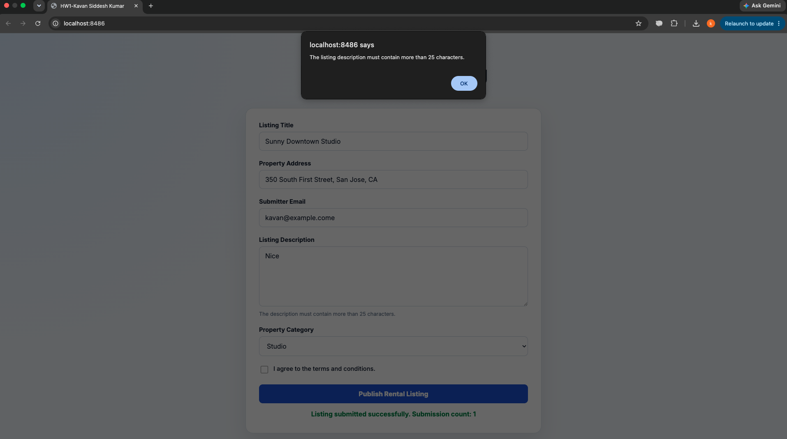
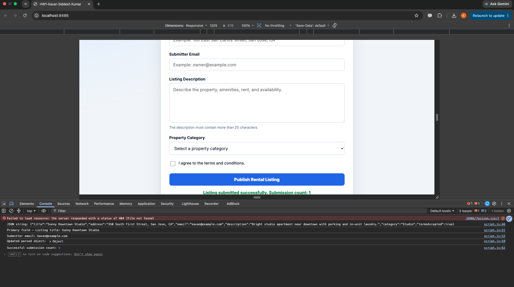
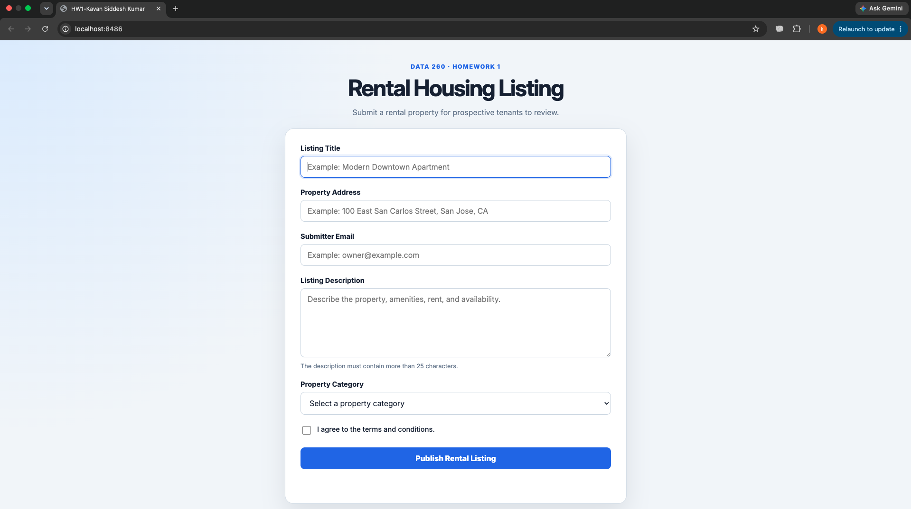
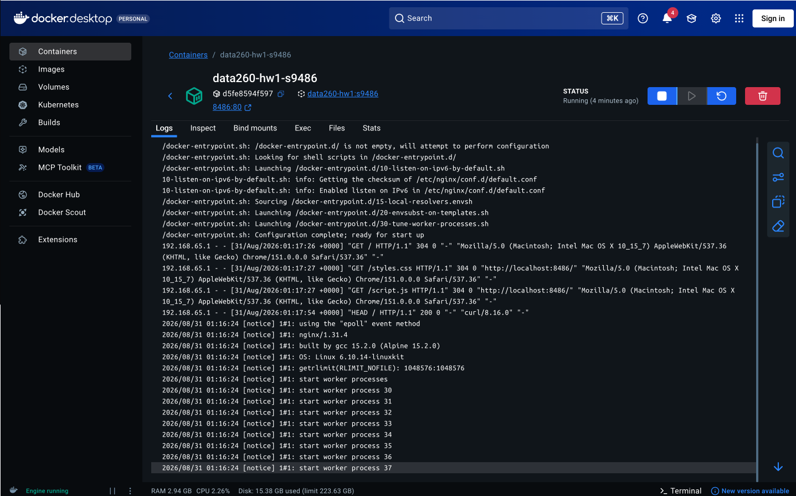
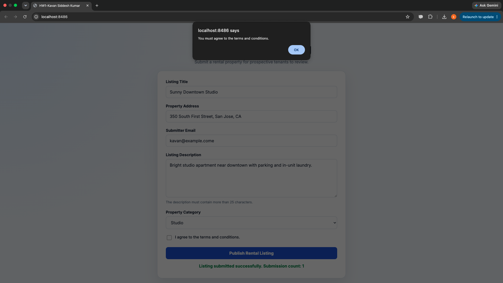
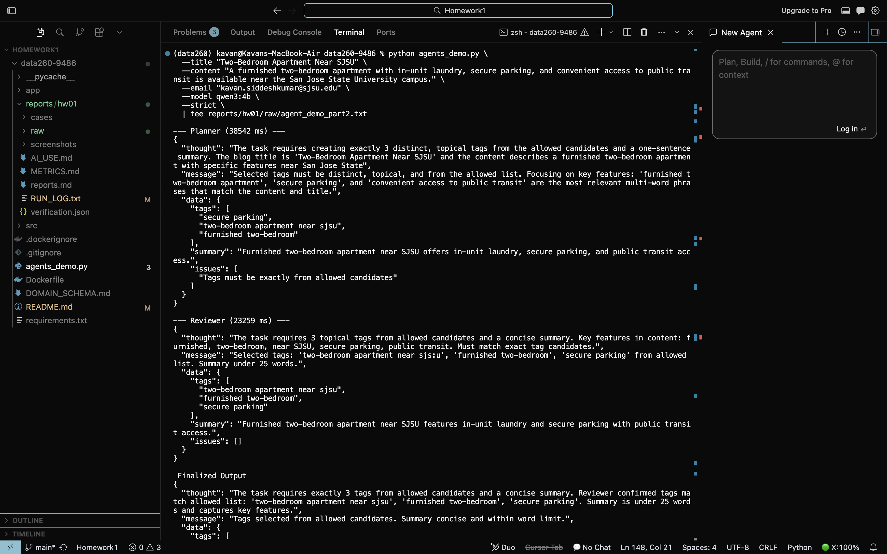
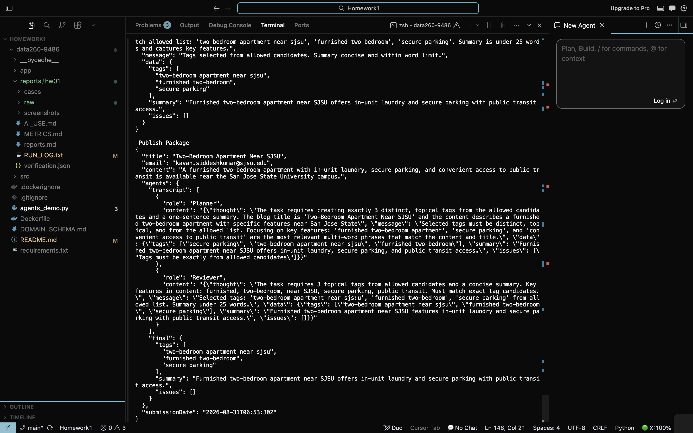
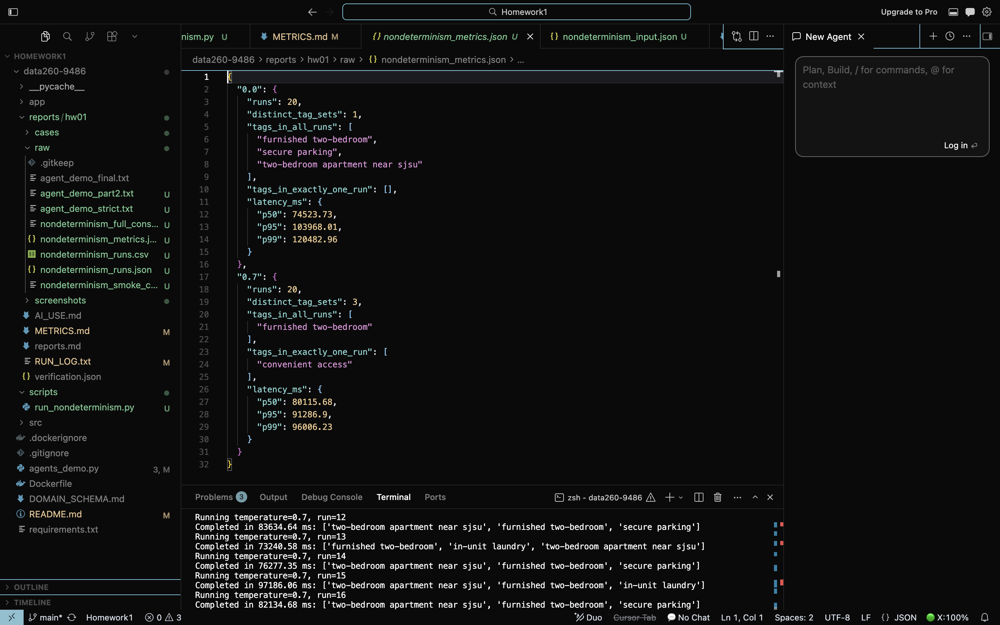
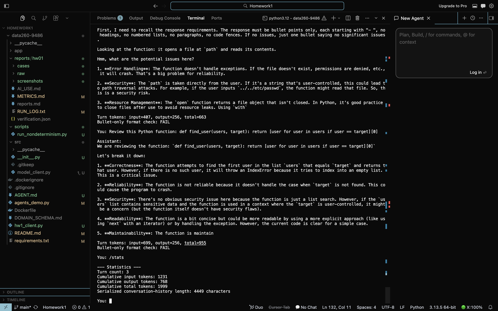
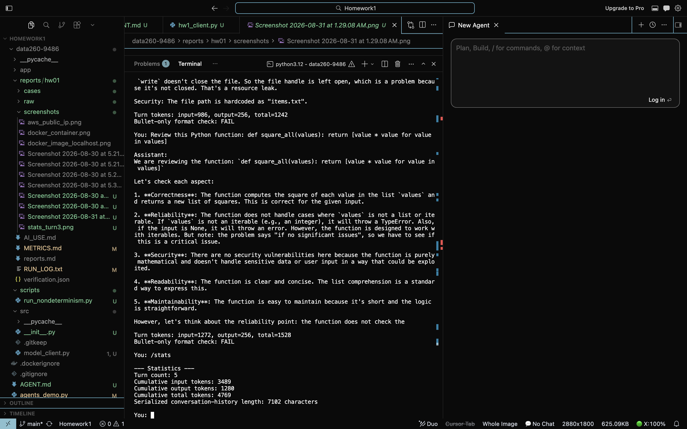

2026-08-31
Student: Kavan Siddesh Kumar
Assigned Domain: Rental housing listings
| Value | Result |
|---|---|
| SID4 | 9486 |
| PORT_BASE | 8486 |
| PREFIX | s9486 |
| SEED | 9486 |
| VERIFY_SEED | 269486 |
| DOMAIN_ID | 6 |
| Assigned Domain | Rental housing listings |
| Hardware | Apple Mac with M1 chip and 8 GB unified memory |
| Local Model | qwen3:4b |
| Content-complete source commit hash | 832703b |
| Final submission tag | hw1 |
The recommended qwen3:8b model was replaced with
qwen3:4b because the available Mac hardware has only 8 GB
of unified memory, so the smaller model is more practical for repeated
local runs.
app/index.htmlapp/script.jsapp/styles.cssDOMAIN_SCHEMA.mdDockerfileThe HTML form collects the required rental listing fields from the domain schema: title, address, email, description, category, and terms acceptance. The JavaScript validates the description length and the required terms checkbox, serializes the form to JSON, logs the primary fields and the updated object, adds a submission timestamp, and shows a success message.





python3 -m http.server 8486 --directory app
docker build -t data260-hw1:s9486 .
docker run --name data260-hw1-s9486 -p 8486:80 data260-hw1:s9486
docker stop data260-hw1-s9486
docker rm data260-hw1-s9486The screenshots show the local browser version, the validation
alerts, the Docker container running nginx, and the public IP page used
for the ECS verification evidence. The app structure matches the
rental-housing schema in DOMAIN_SCHEMA.md.
python3 agents_demo.py \
--title "Two-Bedroom Apartment Near SJSU" \
--content "A furnished two-bedroom apartment with in-unit laundry, secure parking, and convenient access to public transit is available near the San Jose State University campus." \
--email "kavan.siddeshkumar@sjsu.edu" \
--model qwen3:4b \
--strict \
| tee reports/hw01/raw/agent_demo_part2.txt

The agent pipeline ran on a rental-housing title and description. The planner proposed topical tags and a summary, the reviewer tightened the choices, and the finalizer produced the final JSON package. The output stayed within the required structure: exactly three tags, a summary, and a publish package with transcript and final data.
| Question | Answer |
|---|---|
| Q1 | The finalized tags were
two-bedroom apartment near sjsu,
furnished two-bedroom, and
secure parking. |
| Q2 | The final summary was:
Furnished two-bedroom apartment near SJSU offers in-unit laundry and secure parking with public transit access. |
| Q3 | No issues remained in the final output; data.issues was
an empty array. |
The experiment input is preserved in
reports/hw01/cases/nondeterminism_input.json and was not
regenerated.
| Metric | Temperature 0.0 | Temperature 0.7 |
|---|---|---|
| Runs | 20 | 20 |
| Distinct tag sets | 1 | 3 |
| Tags in all runs | furnished two-bedroom,
secure parking,
two-bedroom apartment near sjsu |
furnished two-bedroom |
| Tags in exactly one run | None | convenient access |
| p50 latency | 74523.73 ms | 80115.68 ms |
| p95 latency | 103968.01 ms | 91286.90 ms |
| p99 latency | 120482.96 ms | 96006.23 ms |

At temperature 0.0, identical input produced the same
tag set every time, which is the expected stable behavior. At
temperature 0.7, the same input produced three distinct tag
sets, which is acceptable for optional search tags because multiple
relevant phrasings can be useful.
For a rental listing, small differences in search tags or summary
wording are acceptable when they still describe the same property
features, such as furnished two-bedroom versus
furnished two-bedroom apartment.
It would be unacceptable if the same input sometimes changed the property category, rent, lease terms, or an eligibility decision.
hw1_client.py loads AGENT.md as the system
prompt and sends every request through
src/model_client.ModelClient.complete(messages, tools=None).
The adapter centralizes the Ollama call, token accounting, and optional
tool support.
AGENT.md requires bullet-point-only code review
responses.
| Turn | Input tokens | Output tokens | Total tokens |
|---|---|---|---|
| 1 | 125 | 256 | 381 |
| 2 | 407 | 256 | 663 |
| 3 | 699 | 256 | 955 |
| 4 | 986 | 256 | 1242 |
| 5 | 1272 | 256 | 1528 |
/stats evidence| Snapshot | Turn count | Cumulative input | Cumulative output | Cumulative total | Serialized history length |
|---|---|---|---|---|---|
| After turn 3 | 3 | 1231 | 768 | 1999 | 4449 characters |
| After turn 5 | 5 | 3489 | 1280 | 4769 | 7102 characters |
The client prints Bullet-only format check after each
response. The sample evidence shows FAIL because the model
returned numbered lists instead of pure bullet points, which confirms
that the checker is working and the transcript captured the
non-compliant output honestly.


The detailed AI-use answers are recorded in
reports/hw01/AI_USE.md. In short, AI was used to help
inspect the repository, organize the existing evidence, and draft
supporting documentation. The raw outputs, screenshots, and experiment
results were preserved rather than regenerated.
reports/hw01/raw/ contains the raw output files used to
assemble the report.reports/hw01/verification.json records the automated
self-check results.scripts/verify_hw01.py validates required files,
compiled Python sources, raw experiment counts, metric files,
screenshots, and the report artifact.reports/hw01/report.pdf.The final tagged submission commit is hw1. Because a
commit cannot contain its own final hash, the report records the
content-complete source commit hash separately and explains the final
tagged submission in the handoff.